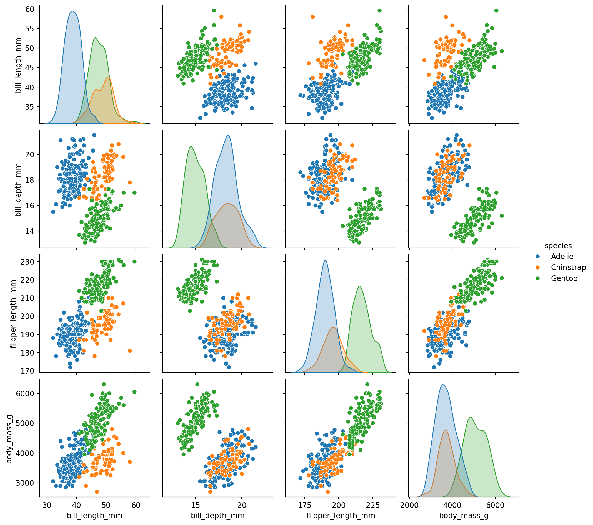

Code
import seaborn as sns
df = sns.load_dataset("penguins")
sns.pairplot(df, hue="species")
bbitq
December 11, 2025
December 11, 2025
Quarto是一个开源的科学技术出版系统，用于科研工作者，程序员等需要发布精心排版的论文或者博客等人使用。
其以内容为中心，只需编写qmd文件（也就是markdown），即可轻松渲染到pdf、HTML、ePub、MS Word等非常多种格式。同时支持使用Python等编程语言嵌入可以执行代码，实现动态内容生成；支持交叉引用，参考文献等多种功能。无需关注前端逻辑和latex等后端。
更多信息参考官方文档：https://quarto.org/docs/guide/
环境配置极为简单，无需依赖Node.js，根据官方用户手册下载对应操作系统的Quarto CLI即可，可以使用vscode编写markdown，只需在vscode中下载扩展Quarto即可，同时支持实时预览。
搭建Quarto博客十分简单，根据官方指导手册即可，可以一键生成blog基本项目结构，根据手册继续修改定制即可。
本站使用如下方式一键推送。
以下是一段绘图代码，绘制的图像为 Figure 1。

这里这段后面有一个角标1。
1 这里是角标标注，可以设置到在页面空白处显示
这里是公式示例：\(E = mc^{2}\)
也可以引用参考文献（可设置csl文件，本文使用IEEE S&P）： [1] 是deepseek-v3的技术报告。
---
title: "Quarto搭建个人博客"
description: "Quarto+github pages"
author: "bbitq"
date: "12/11/2025"
date-modified: "12/11/2025"
toc: true
number-sections: true
reference-location: margin
format:
html:
code-fold: true
code-tools: true
jupyter:
kernel: myenv
bibliography: references.bib
csl: ieee-security-and-privacy.csl
categories:
- Quarto
- Blog
---
# Quarto简介
Quarto是一个开源的科学技术出版系统，用于科研工作者，程序员等需要发布精心排版的论文或者博客等人使用。
其以内容为中心，只需编写qmd文件（也就是markdown），即可轻松渲染到pdf、HTML、ePub、MS Word等非常多种格式。同时支持使用Python等编程语言嵌入可以执行代码，实现动态内容生成；支持交叉引用，参考文献等多种功能。无需关注前端逻辑和latex等后端。
更多信息参考官方文档：<https://quarto.org/docs/guide/>
## Quarto环境配置
环境配置极为简单，无需依赖Node.js，根据官方用户手册下载对应操作系统的Quarto CLI即可，可以使用vscode编写markdown，只需在vscode中下载扩展Quarto即可，同时支持实时预览。
## Quarto博客搭建
搭建Quarto博客十分简单，根据官方指导手册即可，可以一键生成blog基本项目结构，根据手册继续修改定制即可。
本站使用如下方式一键推送。
```bash
quarto publish gh-pages
```
# Quarto基本功能示例
以下是一段绘图代码，绘制的图像为 @fig-example。
```{python}
# | label: fig-example
# | fig-cap: "seaborn官方示例"
import seaborn as sns
df = sns.load_dataset("penguins")
sns.pairplot(df, hue="species")
```
这里这段后面有一个角标^[这里是角标标注，可以设置到在页面空白处显示]。
这里是公式示例：$E = mc^{2}$
也可以引用参考文献（可设置csl文件，本文使用IEEE S&P）： @liu2024deepseek 是deepseek-v3的技术报告。
# 参考文献